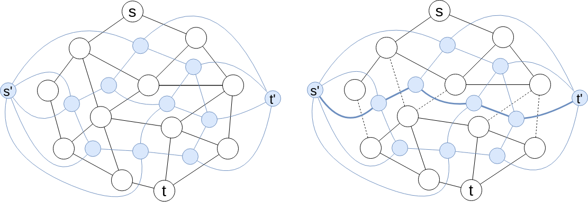
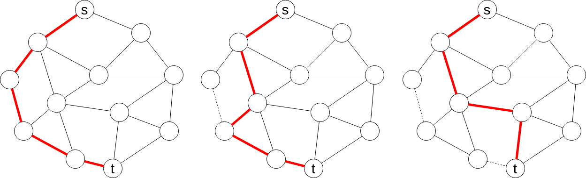

Maximum Flow Algorithm on st-Planar Graph
個人的メモ
st-planar graph の $(s, t)$-最小カット問題は双対グラフの最短経路問題として解くことができる(以下に無向グラフの場合を例に示す).

上図で黒のグラフが元の st-planar graph, 青のグラフがその双対グラフ(+ $1$ 点) である.
双対グラフの各辺のコストはそれと交差する元のグラフの辺のコストとする.
このとき元のグラフの $(s, t)$-最小カットは $(s', t')$-最短経路に対応する.
よって双対グラフを構築し, そのグラフ上で最短経路問題を解くことで $(s, t)$-最小カットを求めることができる.
また [Hassin 1981] の結果から距離ラベルを用いることで実際に最大流を構築することも可能である.
ちなみに平面グラフ上の最短経路問題には線形アルゴリズムが知られているため, この問題は理論的には線形時間で解くことができる([Henzinger, Rao, Subramanian 1997]).
st-planar graph 上の最大流問題にういては別に Ford, Fulkerson によるアルゴリズムが以前から知られている(Berge アルゴリズムとも呼ばれている).

例えば $s$ を上, $t$ を下にして上記のように st-planar graph を描画したとき現在飽和していない辺で最も左の辺を貪欲にたどって増加道を選ぶというものである.
このようにして見つけた増加道に沿ってフローを流せるだけ流すと少なくとも $1$ つの辺が飽和し, 以降増加道が存在しなくなるまでこの操作を繰り返す.
そして操作が終了したときに最大流が得られる. この増加道探索を動的木を使って高速化することで全体で $\O (m \log n)$ のアルゴリズムを設計することができる.
正当性の証明は [Ford, Fulkerson 1956] や [Itai, Shiloach 1979] など. 結局
"貪欲にたどって選ばれた増加道に沿って目一杯流したフローを含むような最大流が存在するかどうか"
ということが問題になるがそのようなフローを流さない方が真にうれしい場合というのがグラフの辺が交差しないという条件の下ではありえないことが言える.
(余談)
上記の貪欲アルゴリズムの例として例えば最近 codeforces で見かけた問題で次の問題がある.
"$1$ 以上 $k$ 以下の数字 $n$ 個からなる数列 $a$ が与えられるので最長増加列の長さを $k$ 未満にするために削除すべき数字の最小個数を答えよ."
この問題の想定解は $dp[i] =$ "$a_1, \dots, a_i$ を見たときに最長増加列の長さを $a_i$ 未満とするために削除すべき数字の最小個数"
の動的計画法であったが上記の知識を用いると次のように別解法を与えることができる.
この問題は最小カット問題として定式化でき, ネットワークは平面的である.
そこでネットワーク上で飽和していない辺で最も左の辺を貪欲にたどって増加道を選ぶという上記のアルゴリズムを考えてみる.
するとこれは数列 $a$ を前から見てまだ使っていない $1$, $2$, $\dots$, $k$ を貪欲に取っていることに対応していることが分かる.
よって前から貪欲に数字を選んでいって長さ $k$ の増加列が何個作れるかという問題になりこれは set などを使って簡単に解くことができる.
このように一見自明ではない貪欲解法をアルゴリズムから導くことができる.